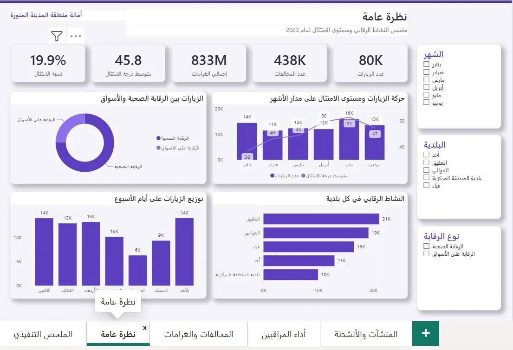

Wael Saballyl, data analyst, software engineer and IT support in Jeddah
Data analystSoftware engineerIT support
I'm Wael, based in Jeddah. I turn raw datainto dashboards people use, and I buildthe tools that feed them.
I work with
Open to work
Data analyst — Software engineer — IT support —Data analyst — Software engineer — IT support —
What I do
Three kinds of work, one person.
Hiring for one of these? Start with that card. The button takes you straight to the projects that prove it.
01
Data analysis
For a year I turned sales, inventory and distribution data into Power BI dashboards and reports that management used. I write the SQL and Python behind them, and I check every total against the source before it goes out.
For: data analyst · BI analyst · reporting roles
02
Software
I build tools that actually run: a FastAPI back end with about 100 endpoints that publishes to five platforms, a scheduled data pipeline, and a desktop app with my graduation team.
At Chalhoub Group I set up laptops, managed Microsoft 365 accounts and permissions and helped staff day to day. I also keep my own app online over HTTPS and run a scheduled data pipeline in the cloud.
For: IT support · helpdesk · systems roles
10+Power BI dashboards and Excel reports I built at Kaner Group
Live3,588job postings collected by my Masar Radar pipeline
5platforms OmniPost publishes to from one upload
BScSoftware Engineering, taught in English, 2026
Projects
Things I've built
Each project is tagged Data, Software or IT. Click any card to see the problem, what I did and the result.

View project →
Power BI · Data model · 2026Data
Madinah inspection visits dashboard
80,000 municipal inspections in five Arabic Power BI pages. I found that only 2.8% of 834 million riyals in fines was ever billed.
80Kvisits454Kviolations23DAX measures2.8%billed
Data · Power BI · 2026
Madinah inspection visits dashboard
A Power BI report on 80,000 municipal inspections, built for the people who decide where inspectors go next.
Problem
Two Excel sheets at different levels of detail gave fine totals 725 million riyals apart.
I built
A star schema with 2 fact tables and 6 dimensions, 23 DAX measures and five Arabic pages, from an executive summary down to single inspectors.
Result
Totals that match the source, and the finding that mattered most: only 2.8% of fines were billed.
A pipeline that reads data-job postings from five public APIs on a daily schedule and shows which skills Gulf employers actually ask for.
3,588collected590open now60in the Gulf
Data · Software · IT · 2026
Masar Radar
I was job hunting and wanted to know which skills Gulf data jobs actually ask for, so I built something that reads the postings for me.
Pipeline
Pulls postings from 5 public job APIs on a daily schedule, removes duplicates, and has an AI model read each posting once to pull out the skills and the level.
Runs on
A scheduled GitHub Actions job, with the API keys kept as repository secrets. The website rebuilds itself after every run.
Shows
For entry-level data jobs, Excel and SQL each appear in almost half the postings. Python comes third.
Upload a video once and it goes out to YouTube, Instagram, TikTok, Facebook and Threads. Built and deployed on my own.
5platforms~100API endpoints35tests
Software · Data · IT · 2026
OmniPost
Posting one video to five platforms by hand used to take my whole evening. Now it's one upload.
I built
A FastAPI back end with about 100 endpoints over a 14-table SQLite database. It publishes for real to YouTube, Instagram, TikTok, Facebook and Threads through each platform's own API, with OAuth sign-in, hashed passwords and a background worker that retries failed jobs.
Measured
I tested video quality (VMAF) at four bitrates before choosing one. At 30 Mbps it scores 94 out of 100, and a 4 GB clip becomes 260 MB. Encoding on the GPU cut a test clip from 57.6 to 23.5 seconds.
Runs on
My own PC acts as the server, reachable over HTTPS at a fixed address through Tailscale Funnel, so each platform's sign-in works from anywhere. A deploy script for an Ubuntu server (Caddy, firewall, systemd) is ready for when it moves. Each user gets a separate workspace, with 35 tests covering isolation, uploads and invites.
Say "Jarvis" and give a command, or use one of 8 hand gestures to click, scroll and take screenshots. Team of five.
8gestures5teammates
Software · Graduation project · 2025
A desktop you run with your voice and hands
Say "Jarvis" and give a command, or use one of 8 hand gestures to move the cursor, click, scroll and take screenshots.
Team
Five of us. I supported the integration layer between the Python engine and the desktop app, and the logic that combines voice and gesture results into one action.
How
Gestures are read with MediaPipe, speech is turned into text with AssemblyAI, and GPT-4.1 works out what the user meant.
Shipped
An Electron and React desktop app with a Windows installer.
What happened when I built the Madinah dashboard, in five steps.
Step 1 of 5
A tidy sheet called Visits.
80,000 rows, one per inspection. Add up the fines column and you get 109 million riyals. It looked finished.
0SAR fined
Source · Visits sheet · 79,700 rows
Step 2 of 5
Every visit had exactly one violation.
All 80,000 of them. Inspectors don't walk into a grocery and find exactly one problem, every single time. That pattern was the clue.
That's not a pattern. That's a shortcut.
Step 3 of 5
The rest had been dropped.
The second sheet held every violation, 454,000 rows. Same inspections, counted at the right level. The real total was 834 million.
109,000,000SAR fined
Source · Violations sheet · 454,000 rows
Step 4 of 5
Only 2.8% was ever billed.
That became the headline of the dashboard. The problem wasn't how much was fined. It was that almost none of it turned into an invoice.
2.8%
Billed834M fined
Step 5 of 5
The finished dashboard.
A star schema with 2 fact tables and 6 dimensions, 23 DAX measures and five Arabic pages, from an executive summary down to single inspectors. The data is simulated for the portfolio.
Management asks something, I find the data, build the Power BI or Excel view, and keep it updated.
02Check numbers before they go out
I compare every total against an independent query, so a wrong figure gets caught by me and not by a manager.
03Automate the slow parts
If a report or task repeats, I write the Python, SQL or scheduled job that does it, like my daily job-market pipeline.
04Keep people working
Laptops, Microsoft 365 accounts and permissions, learned on the job at Chalhoub Group, plus the basics of Linux and networking.
I studied software engineering, then ended up in data because I kept asking where the numbers came from.
That mix is the point. I can read a business question, build the dashboard that answers it, and write the code when the right tool doesn't exist yet. I'm in Jeddah and available now.
2025
Data Analyst · Kaner Group, Northern Cyprus · remote, part-time
Wrote SQL and Python to collect, clean and analyze sales, inventory and distribution data for a group of 700+ staff. Built 10+ Power BI dashboards and worked directly with management to turn their questions into reports.
Summer 2025
IT Support Trainee · Radwa Trading (Chalhoub Group), Jeddah
Set up staff laptops with the operating system, drivers and applications, and managed user accounts and permissions in Windows and Microsoft 365.